Alien Contact
Wisdom-Square › UFO Technology › Alien Contact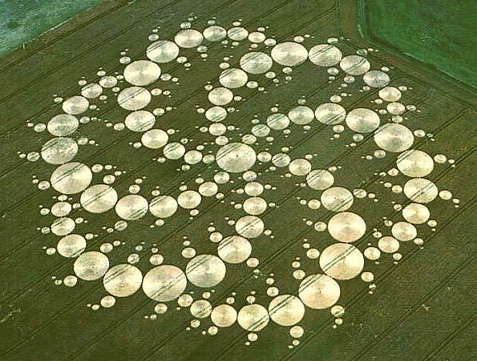
In early August of 2001, what became known as the “mother of all crop circles” appeared overnight in Milk Hill in Wiltshire, England. This particular crop circle gained its fame being all over mainstream news channels for two reasons. It was formed overnight during a heavy rainstorm, and it consisted of 409 circles, making it almost 900 feet in diameter. Till this day it still remains the largest crop pattern ever recorded. The following are claimed by researches to distinguish genuine crop patterns (i.e. those not made by people with planks of wood):
1. The stems of the crop are bent and not broken, so the crop continues to grow, even though it is lying flat
2. The ground appears to have undergone a burst of heat, radiation or ultrasound
3. Nodes on the stems are ‘blown’, as though heated very quickly
4. The structure of the soil itself has been altered, as though by temperatures exceeding 1500 degrees Celcius or extreme pressure
5. Genuine circles are not perfectly round, but slightly elliptical
6. The local electromagnetic (EM) field is altered
Much more amazing than this one is the next crop circle that appeared in the same month. However, this one was way too controversial to make it onto public T.V.
|
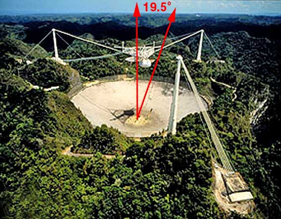 |
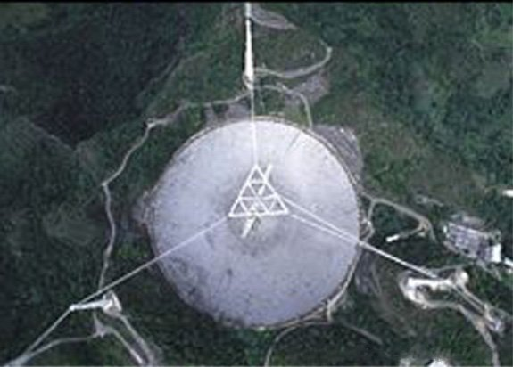 |
On November 16th, 1974 NASA’s SETI (Search for Extraterrestrial Intelligence) sent out 1679 high energy pulses of binary code (0’s & 1’s) at the globular star cluster M13, which is 22,800 light years away. They sent the message from the Arecibo Observatory in Puerto Rico. The message was designed to be read graphically by dividing the number of pulses by prime numbers. A pictogram then emerges from the configuration that is 23 digits wide by 73 digits long. The content of the message provided basic information about human life on Earth: which planet we are on in our solar system, what we generally look like, how tall we are, how many of us there are, the basic chemical building blocks of our genetics, and the helical spiral structure of our DNA, the kind of instrument we used to send the message with.
27 years later this beam signal is still another 22,773 years or so away from reaching its target star cluster. However, on Sunday, August 19, 2001 a reply was written back to this message in a wheat field in Chilbolton right next to another satellite dish, the Chilbolton Radio Observatory in Hampshire, England. Before this formation, a series of other interesting patterns have occurred in the same wheat field. Either the hoaxers find it a convenient field, or the previous patterns might be relevant to an on-going stream of information.
1999
|
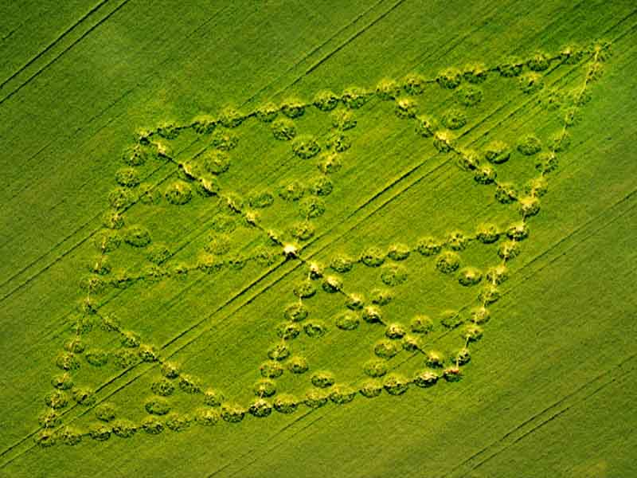 |
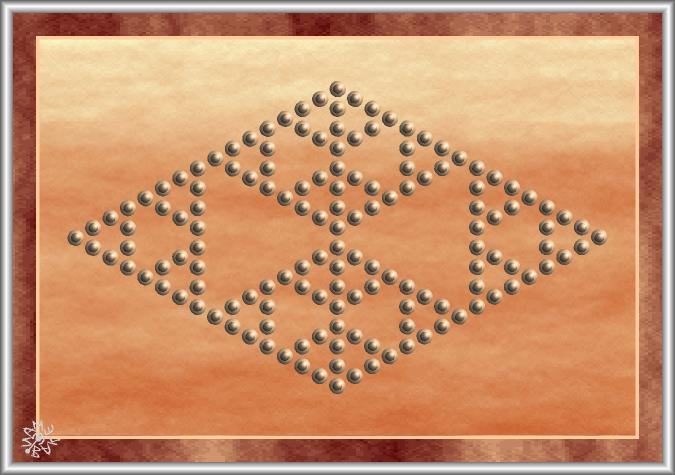 |
A crystalline shape was found in the Chilbolton field. It’s now believed after receiving the crop circle in 2001 that this may be the pattern of the crystalline structure of some form of Silicon that’s unique to their DNA structure.
2000
|
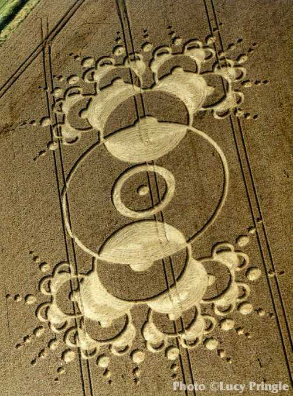 |
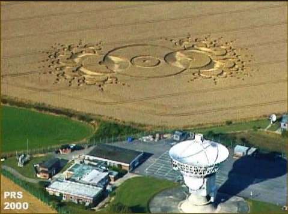 |
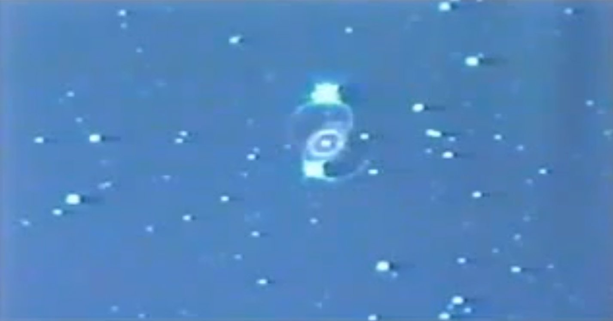 |
After the 2001 crop circle, it’s clear to see that this is a much more detailed representation of the instrument the aliens used to send their reply with, since it closely resembles the rough representation at the bottom of their reply message, which is where we placed a description of our machine that we used to broadcast the signal. So this may just be their technology which is beyond our known ledge; an advanced method of communication, or even a device for making crop formations. To the surprise of many scientists from NASA, as they were observing the aftermath of a supernova exploding they witnessed something they didn't expect. They assumed a random chaotic scene, but instead found a very structured spiral pattern that in fact perfectly resembles the pattern of this crop circle. Although it looks to be a 2D pattern, it is really a 3D shape. The dynamic of a double torus shape, also known as the Coriolis Effect which indicates a black hole.
August 13, 2001
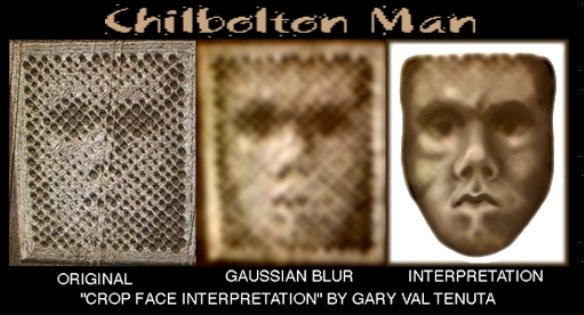
A week before the Chilbolton Code formation appeared, an eerie image of a face appeared in the field, not far from where the Code later appeared. The image was created almost like a newspaper photograph, with dots in various sizes giving an impression of depth when viewed from a distance. This image is vaguely reminiscent of the infamous Face on Mars that was first photographed by the Viking orbiters in 1976; both images even seem rectangular. This may just be their mug shot.
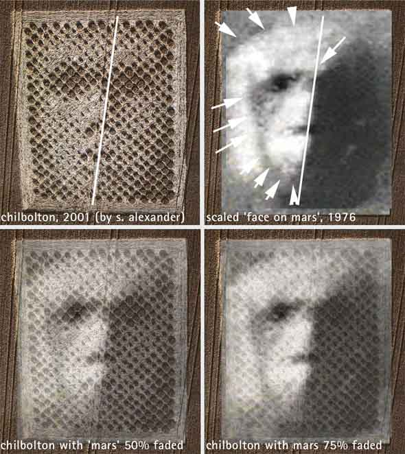
Agust 19, 2001
|
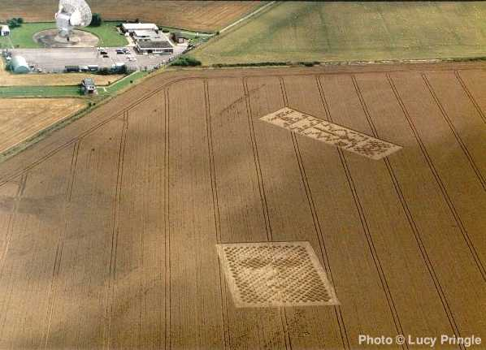 |
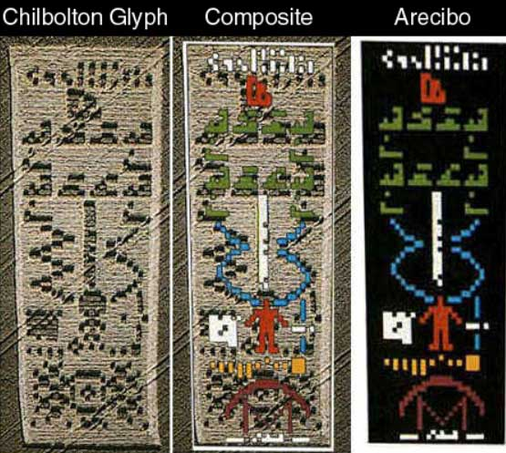 |
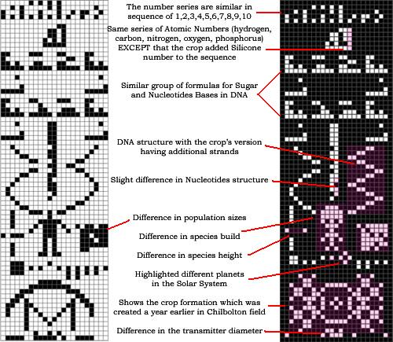
The Chilbolton Code formation looks very much like the one we broadcasted in 1974, with also the same original dimensions of 23 by 73, but there are some subtle differences. Please refer to the image below for the differences. Interesting to note is that they added Silicon to their DNA structure, and that scientists have just recently discovered that life may be supported by Silicon… whereas before we only believed it could be supported by Carbon like with us. Also, the fact that an extra strand of DNA is added… giving them 3 strands of DNA, is interesting because scientist have begun to find a few human babies that are being born with 3 strands of DNA now, instead of the original 2. The human genome has nearly 4.3 billion nucleotide sequences, while the mystery genome sequence has about one million more.
Finally, the diagram that depicts our solar system has been replaced with another that still has nine worlds, but the planets 3-5 (possibly Earth, Mars, and Jupiter) are lifted up, which is how we indicated which planet we inhabit. The 5th planet (possibly Jupiter) is drawn larger than the others or perhaps instead represents multiple inhabited moons. The fact that Jupiter’s moons are highlighted in a special diamond shape actually would support the discovery from NASA that stated that there is water and heat on the Jovian moons Calisto, Ganymede, and particularly Europe, which makes them good candidates for life. They are predicted to have subsurface oceans with more saltwater than Earth even. This research was published June 15, 2001.
Hungarian scientists in September, 2001 announced that they have found evidence of living organisms on Mars, based upon analysis of 60,000 photographs taken by the Mars Global Surveyor probe. The three-man team said the pictures showed evidence of thousands of dark dune spots, similar to organisms found near Earth’s South Pole, in craters in Mars’ snowy southern polar region. These spots indicate that on the surface below the ice there are such organisms which, by absorbing solar energy, are able to melt the ice and create better conditions of life for themselves. If any life exits on Mars, then the possibility of more advanced life there, perhaps below the surface to avoid meteorites, is greatly enhanced.
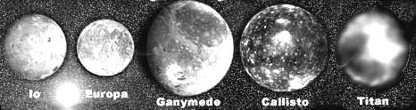
|
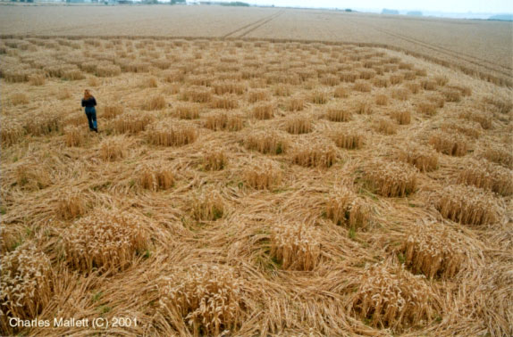 |
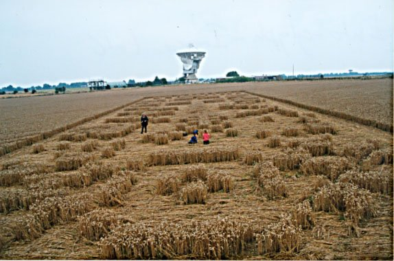 |
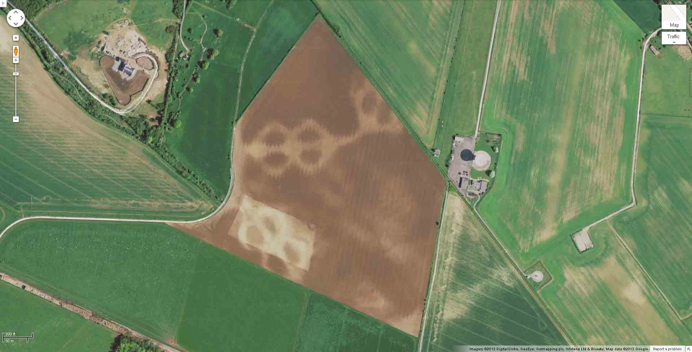
According to the author of the book series, “Voyagers”, Ashayana Deane , which has been considered to be one of the highest, clearest, most detailed sources of cosmological wisdom and insight has the follow to offer. She speculates that there are 5 entities of intelligent life:
1. Carbon-based biology (us) physical matter
2. Carbon-silica-based biology (the humanoid aliens that replied to us) physical matter
3. Silica-based biology, etheric matter
4. Crystalline liquid-light based biology, Pre-matter
5. Standing wave pattern flame or fire body, Ante-matter (astral spirits, angles, archangels, etc.)
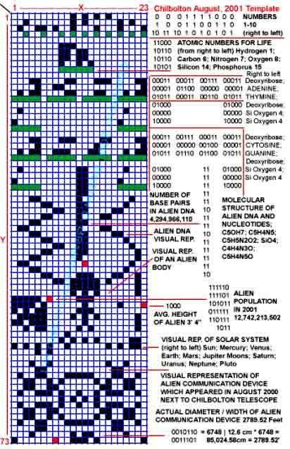